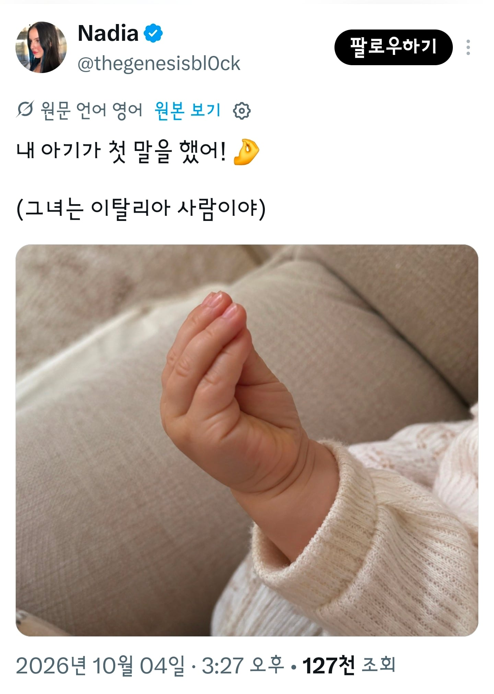

내 아기가 첫 말을 했어!!
댓글
만두
본 조르노
맘마미야
: 너 어릴때 했던 첫마디가 뭔지 아냐
: 뭔데?
: 🤌
:
트위터같은데서 마지막에 " : " 이거 많이 하던데 무슨의미임?
몰?루
걍 쓰던데
...
할말잃
아 시바 할말을 잊었슴다
'씨발...' 이라는 뜻이야
유전자 각인인가 ㅋㅋ
뻬뻬론치~노
본 조RR노
우리애는 엄마도 아니고 아빠도 아니고 물개였는데
개빡첫네
압ㅃ푸ㄹ르르루루루트
🤌
이딴걸 분유라고 타왔나 푸타나 푸타나-
요쏘이꼬레아노
어쁘로브드
뽀르꼬 디오!
반칙 안했다고 우길때 하는거 아니냐
에이 암 워낀 히어!
엄마야 분유가 짜다
도미닉 드꼬꼬
수다쟁이네